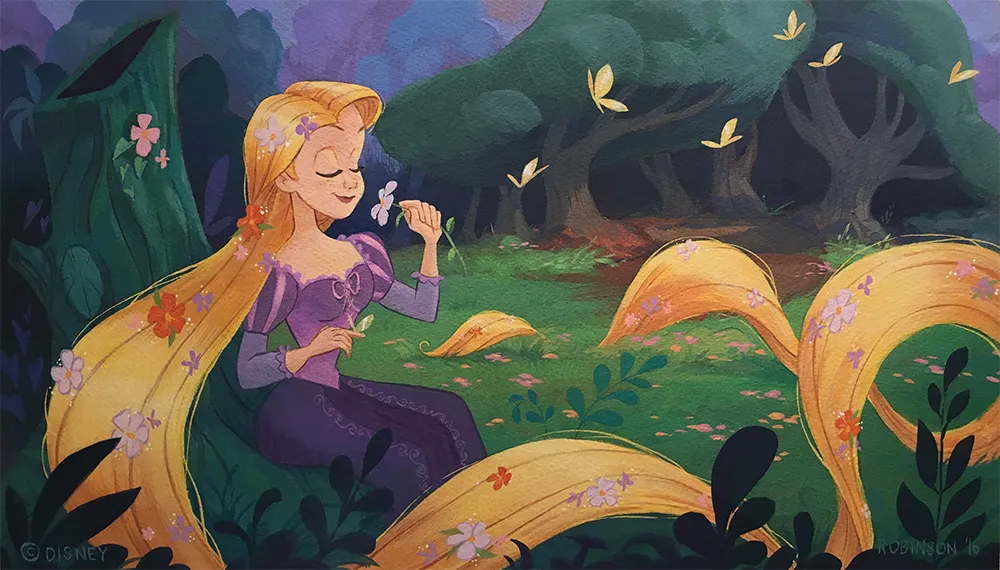

Cómo crear un portfolio de ilustración profesional
Un portfolio es una de las herramientas más importantes para cualquier ilustrador. Es tu carta de presentación, tu escaparate creativo y el puente que conecta tu trabajo con clientes, estudios o posibles oportunidades profesionales. Crear un portfolio efectivo no consiste solo en mostrar dibujos, sino en transmitir quién eres como artista.
Selecciona solo tus mejores obras
Un error habitual es querer incluir absolutamente todo. Sin embargo, un portfolio profesional destaca por su claridad y coherencia. Es preferible mostrar pocas ilustraciones de gran calidad antes que muchas que no representen tu nivel actual.
Muestra variedad sin perder tu estilo
Incluir diferentes tipos de trabajos puede demostrar tu versatilidad: personajes, fondos, props, escenas completas, bocetos finalizados… Aun así, es recomendable que exista un hilo visual que conecte todas tus piezas. Esto ayuda a que los clientes entiendan qué pueden esperar de ti.
Organiza tu portfolio por secciones
La estructura facilita que quien lo visite encuentre lo que busca. Puedes organizarlo por categorías como: Concept art, Fondos y escenarios, Bocetos y proceso creativo, etc.
Esta división también permite que adaptes tu portfolio según la oportunidad profesional a la que te dirijas.
Incluye tu proceso creativo
Mostrar bocetos, estudios de color, turnarounds o versiones intermedias ayuda a que los profesionales comprendan tu forma de trabajar. Muchos clientes no solo quieren ver resultados, sino cómo llegas hasta ellos.
Mantén tu portfolio actualizado
Tu estilo evoluciona, tu técnica mejora y tus intereses cambian. Revisar y actualizar tu portfolio cada cierto tiempo asegura que siempre refleje tu nivel actual. Es útil eliminar piezas antiguas que ya no representan tu trabajo.
Un buen portfolio no solo enseña ilustraciones, sino que comunica profesionalidad, intención artística y personalidad. Es una inversión directa en tu futuro como ilustrador o ilustradora.